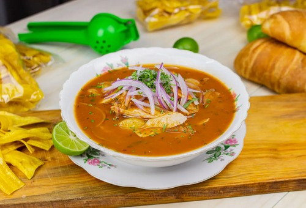

Encebollado: orgullo ecuatoriano entre las mejores sopas del mundo
Publicado el 29 de mayo de 2025 por Verde y Vital
El encebollado, plato emblemático de la gastronomía ecuatoriana, ha sido reconocido nuevamente por el portal internacional TasteAtlas. En su ranking de las 50 mejores sopas de mariscos del mundo, publicado en mayo de 2025, el encebollado ocupa el noveno lugar, destacándose por su sabor intenso, ingredientes frescos y valor cultural.
Preparado con albacora, yuca, cebolla encurtida, tomate, cilantro y especias como comino, el encebollado es considerado por muchos como el mejor remedio para el chuchaqui (resaca) y una tradición dominical en Ecuador. En 2024 fue declarado Patrimonio Cultural Inmaterial del país, reforzando su importancia histórica y culinaria.
Este reconocimiento internacional no es nuevo: en 2023, TasteAtlas lo ubicó como la segunda mejor sopa de pescado del mundo, y en 2024 fue incluido entre los mejores platos de agua salada. Su presencia constante en los rankings demuestra que el encebollado no solo conquista paladares locales, sino también internacionales.
¿Ya lo has probado? Si no, ¡es momento de preparar una versión casera y descubrir por qué el mundo lo ama!
Fuente: Primicias - TasteAtlas 2025